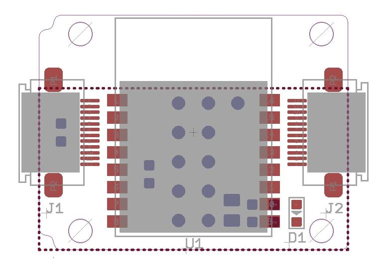
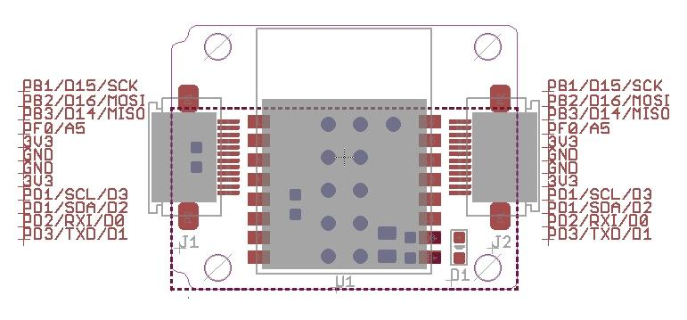
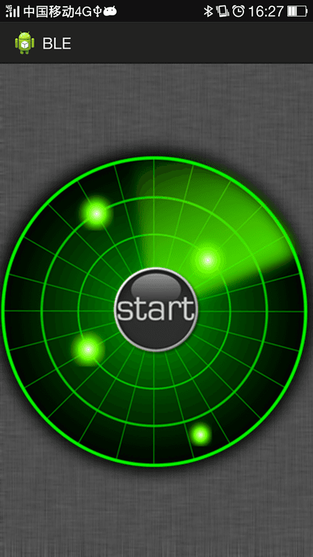
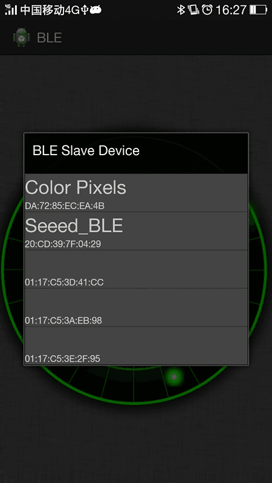
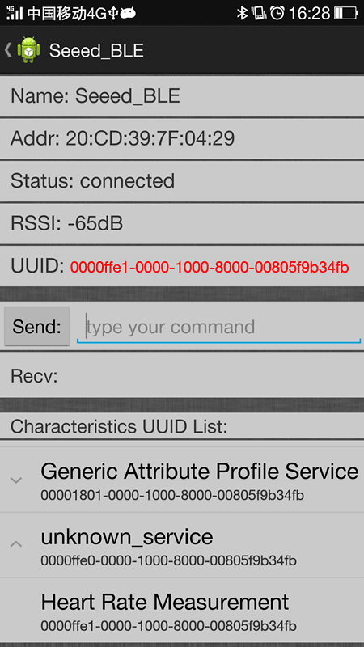
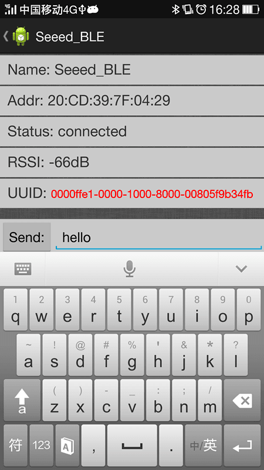
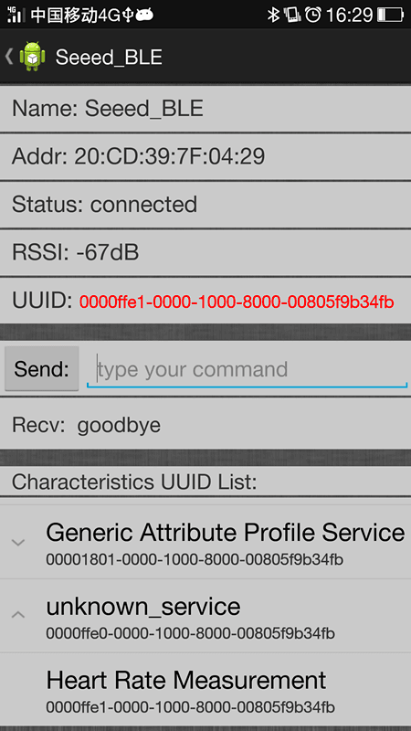

The Xadow - BLE is a Bluetooth Smart enabled Xadow form factor module based on HM-11 module. The Xadow - BLE can be used in hardware setups, where normally an Xadow module is used. Using a Xadow - BLE an Xadow enabled embedded system can communicate with desktop computers, smartphones, table computers and even other embedded systems providing Bluetooth Smart aka Bluetooth Low Energy (BLE).
Prototype version:

Note: BLE Bee
| Specification | Value |
|---|---|
| Microprocessor | CC2540 |
| Resources | Support the AT command, the user can according to need to change the role (master, slave mode) and the serial port baud rate, name of equipment,Matching parameters such as password, the use of flexible. |
| PCB size | 24.5mmx30.5mmx0.8mm |
| Outline Dimension | 24.5mmx30.5mmx9.77mm |
| Power supply | 3.3V |
| Communication Protocol | Uart(TTL) |
| IO counts | 2 |
| Key input IO | 1 |
| LED Indicators IO | 1 |
| Connectivity | Socket compatible with Xadow |
| Specification | Min | Typ | Max | Unit |
|---|---|---|---|---|
| Max Input Voltage | -0.3 | 3.6 | V | |
| Working Input Voltage | 2.0 | 3.3 | 3.6 | V |
| Transmit Current | 15 | mA | ||
| Receive Current | 8.5 | mA | ||
| Deep Sleep Current | 600 | uA | ||
| Operating Temperature | -40 | 125 | °C |

Note: Only important alternate functions are listed, may have more, please refer to datasheet.
1） Query the native MAC address
Send: AT+ADDR?
Send after a successful return: OK + LADD: MAC address (address for 12 string)
2） Query the baud rate
Send: AT+BAUD?
Send after a successful return: OK + Get: [para1]
Scope of para1:0 ~ 8. The parameters corresponding to: 0 represents 9600, 1, 2, 9600, 38400, on behalf of the representative representative of 57600, 115200, 5, 4800, 6, 7 represents 1200, 1200 2400. The default baud rate to 9600.
3） Set the baud rate
Send: AT+BAUD[para1]
Send after a successful return: OK + Set:[para1]
Example: send: AT + BAUD1, return: OK + Set: 2.The baud rate is set to 19200.
Note: after the switch to the 1200, module will no longer support the configurations of the AT command, and press the PIO0 under standby, module can restore the factory Settings.Do not recommend using the baud rate.After setting the baud rate, modules should be on electricity, anew set parameters can take effect.
4） from the device connected to the bluetooth address specified
Send: AT+CON[para1]
Send after a successful return: OK + CONN[para2]
Para2 range is: A, E, F
Example: from the bluetooth address is: 0017EA0943AE, sending the AT + CON0017EA0943AE, module returns: OK + CONNA or OK + + CONNF CONNE or OK.
5） removal equipment matching information
Send: AT+CLEAR
Send after a successful return: OK + CLEAR
Clear success had connected device address code information.
6） query module working mode
Send: AT+MODE?
Send after a successful return: OK + Get: [para]
Para: the range of 0 ~ 2. 0 represents passthrough mode, on behalf of the PIO acquisition + remote control + 1 passthrough, 2 representative passthrough + remote control mode.The default is 0.
7） set module working mode:
Send: AT+MODE[para1]
Send after a successful return: OK + Set: [para]
8） query device name
Send: AT+NAME?
Send after a successful return: OK + NAME [para1]
9） set the device name
Send: AT+NAME[para1]
Send after a successful return: OK + Set: [para1]
Example: Set the device name to Seeed, sending the AT + NAMESeeed, return OK + Set: Seeed AT this time, the name of the bluetooth module has been changed to Seeed.
Note: after the instruction execution, required to electricity, set the parameters of the approval.
10） query matching password
Send: AT+PASS?
Send after a successful return: OK + PASS: [para1]
Para1 range is 000000 ~ 999999, the default is 000000.
11） pairing set password
Send: AT+PASS[para1]
Send after a successful return: OK + Set: [para1]
12） restore factory Settings
Send: AT+RENEW
Send after a successful return: OK + RENEW
Restore the default factory Settings module, the module Settings will be reset so, back to the factory with the status of the factory default, delay module 500 ms after the restart.If no need, please be careful.
13） module reset
Send: AT+RESET
Send after a successful return: OK + RESET
After the instruction execution module will delay 500 ms after the restart.
14） set the master-slave mode
Send: AT+ROLE[para1]
Send after a successful return: OK + Set: [para1]
Note: when connect Xadow-BLE to Xadow Main Board, you should concern about the connection direction. The connection method is that the unfilled corner of one Xadow module need to connect to the right angle of another module(see four corners of each Xadow module).
//make Xadow BLE as a BLE Master device
#define SerialBaud 9600
#define Serial1Baud 9600
void setup()
{
Serial.begin(SerialBaud);
Serial1.begin(Serial1Baud);
while(!Serial.available());
// set master
Serial1.print("AT+ROLE1");
delay(1000);
}
void loop()
{
while(Serial.available()){
Serial1.write(Serial.read());
}
while(Serial1.available()){
Serial.write(Serial1.read());
}
}
//make Xadow BLE as a BLE Slave device
#define SerialBaud 9600
#define Serial1Baud 9600
void setup()
{
Serial.begin(SerialBaud);
Serial1.begin(Serial1Baud);
while(!Serial.available());
// set slave
Serial1.print("AT+ROLE0");
delay(1000);
}
void loop()
{
while(Serial.available()){
Serial1.write(Serial.read());
}
while(Serial1.available()){
Serial.write(Serial1.read());
}
}
Here we show you how to make Xadow - BLE communicate with your Android mobile phone（Note: your android system version should be up than 4.3).
1. Download the android APP here ,and install it to your android mobile phone.
2. Connect your xadow BLE with Xadow mainboard, and then copy the Xadow BLE Slave device demo code above, compile and upload it to the Xadow MainBoard.
3. Open an Serial Tool(e.g. SSCOM32), and open the Serial Port of Xadow MainBoard.
4. Open the BLE Example APK that you installed in the first step, it will be as follow:

5. click the start button in the center of UI, it will start to scan for BLE slave devices.The Scan result will be shown in the dialog list.

6. Select the Seeed BLE, it will try to connect the Xadow BLE automatically.
7. After you connect the ble slave device successfully,You will find that the UUID is null and you need to pick up one from the list of Characteristics UUID List, Here we choose the UUID:0000ffe1-0000-1000-8000-00805f9b34fb

8. OK, the exciting moment has come! Input the command(data) to the textbox, and then click the Send button, the message will be send to the specified ble devices. and the recv textbox will show the message from the slave devices, just as follow. Have fun!


Xadow-BLE_v1.0 Eagle File
BLE_apk_for_Android
DataSheet of BLE module
BLE Android Source Code On GitHub
4.0 BLE IOS6 Source Code
4.0 BLE IOS7 Source Code
4.0 BLE Android Source Code
More Documents URL